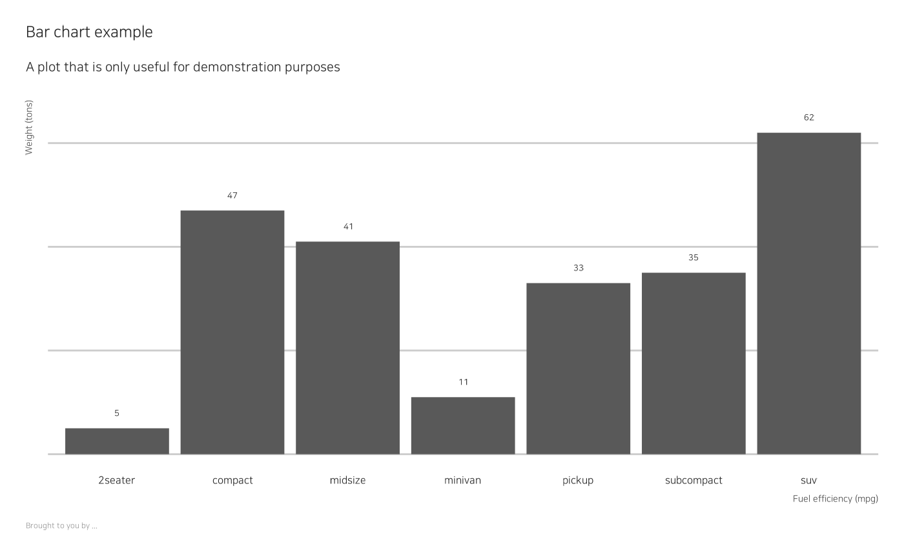

bit_theme.Rdbit_theme provides a basic bitR theme
to use in ggplot2 commands.
bit_theme(
base_family = "NanumSquare",
base_size = 12,
plot_title_family = base_family,
plot_title_size = base_size * 1.5,
plot_title_face = "bold",
plot_title_margin = base_size * 0.75,
subtitle_family = base_family,
subtitle_size = base_size * 1.25,
subtitle_face = "plain",
subtitle_margin = base_size,
strip_text_family = base_family,
strip_text_size = base_size,
strip_text_face = "plain",
caption_family = base_family,
caption_size = base_size * 0.75,
caption_face = "plain",
caption_margin = base_size * 0.75,
axis_text_size = base_size,
axis_title_family = subtitle_family,
axis_title_size = base_size * 0.85,
axis_title_face = "plain",
axis_title_just = "rt",
legend_title_family = base_family,
legend_title_size = base_size * 0.85,
legend_title_face = "plain",
legend_title = FALSE,
plot_margin = margin(15, 15, 15, 15),
grid_col = grey(0.8, 1),
grid = TRUE,
axis_col = grey(0.4, 1),
axis = FALSE,
ticks = FALSE
)Base font family (optional, character).
Default: base_family = "Lato".
Options include "mono", "sans" (default), and "serif".
Base font size (optional, numeric).
Default: base_size = 11.
Recommendations use 11 for print and 16 for web
plot title family, face, size and margin
plot subtitle family, face and size
plot subtitle margin bottom (single numeric value)
facet label font family, face and size
plot caption family, face, size and margin
font size of axis text
axis title font family, face and size
axis title font justification, one of `[blmcrt]`
axis title font family, face and size
legend title if `TRUE` add legend title; default `FALSE`
plot margin (specify with `ggplot2::margin()`)
grid & axis colors
panel grid (`TRUE`, `FALSE`, or a combination of `X`, `x`, `Y`, `y`)
add x or y axes? `TRUE`, `FALSE`, "`xy`"
ticks if `TRUE` add ticks
{
if (!require(ggplot2)) {
install.packages('ggplot2') # installs ggplot2
library('ggplot2') # loads ggplot2
}
# Check if ggplot2 is loaded:
if ("ggplot2" %in% (.packages())){
message("Package 'ggplot2' is loaded.")
} # if ("ggplot2" %in% (.packages())) end.
library(ggplot2)
library(tidyverse)
update_geom_font_defaults()
# Bar chart
count(mpg, class) %>%
ggplot(aes(class, n)) +
geom_col() +
geom_text(aes(label=n), nudge_y=3) +
labs(x="Fuel efficiency (mpg)", y="Weight (tons)",
title="Bar chart example",
subtitle="A plot that is only useful for demonstration purposes",
caption="Brought to you by ...") +
bit_theme(grid="Y") +
theme(axis.text.y=element_blank())
}
#> Loading required package: ggplot2
#> Package 'ggplot2' is loaded.
#> ── Attaching core tidyverse packages ──────────────────────── tidyverse 2.0.0 ──
#> ✔ dplyr 1.1.2 ✔ readr 2.1.4
#> ✔ forcats 1.0.0 ✔ stringr 1.5.0
#> ✔ lubridate 1.9.2 ✔ tibble 3.2.1
#> ✔ purrr 1.0.2 ✔ tidyr 1.3.0
#> ── Conflicts ────────────────────────────────────────── tidyverse_conflicts() ──
#> ✖ readr::col_factor() masks scales::col_factor()
#> ✖ purrr::discard() masks scales::discard()
#> ✖ dplyr::filter() masks stats::filter()
#> ✖ dplyr::lag() masks stats::lag()
#> ℹ Use the conflicted package (<http://conflicted.r-lib.org/>) to force all conflicts to become errors
